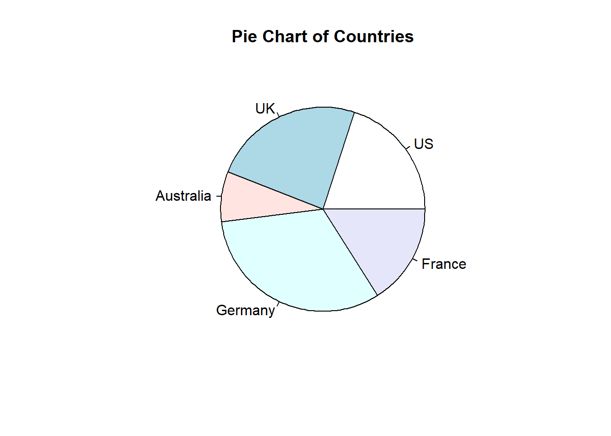

Including Plots
You can also embed plots. See Figure 1 for example:
par(mar = c(0, 1, 0, 1))
pie(c(280, 60, 20), c("Sky", "Sunny side of pyramid", "Shady side of pyramid"), col = c("#0292D8",
"#F7EA39", "#C4B632"), init.angle = -50, border = NA)
Figure 1: A fancy pie chart.
# Simple Pie Chart
slices <- c(10, 12,4, 16, 8)
lbls <- c("US", "UK", "Australia", "Germany", "France")
pie(slices, labels = lbls, main="Pie Chart of Countries")

Figure 2: Example